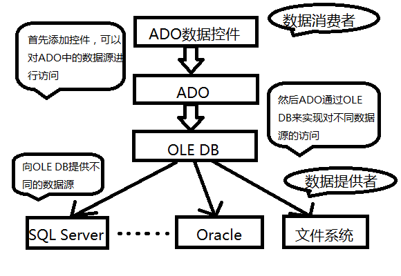
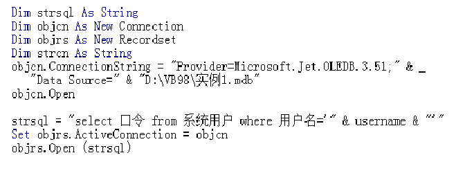

Vb与数据库的连接主要应用了ADO，它是一个用于存取数据源的COM组件。它提供了编程语言和
统一数据访问方式OLE DB的一个中间层。允许开发人员编写访问数据的代码而不用关心数据库是如何
实现的，而只用关心到数据库的连接。
OLE DB是一种低层的编程接口，ADO应用OLE DB可以实现对不同类型数据库的访问，它支持关
系或非关系型的数据源，比如各种类型的数据库，电子表格，电子邮件和文本文件等。OLE DB包括三
个组成部分：数据提供者，数据消费者和服务组件。
数据提供者：Data Provider，指任何OLE DB的提供者。数据提供者从各种数据源读取数据，并将
这些数据转换成消费者支持的格式，一般为关系型数据表。
数据消费者：指使用数据提供者提供数据的应用程序。使用ADO的应用程序都是OLE DB的消费者。
服务组件：起连接数据消费者和数据提供者的作用。在不需要数据消费者和数据提供者的情况下，
将数据转换为不同的类型。如下图为ADO数据控件，ADO，OLE DB和数据提供者之间的关系：

ADO对象模型
ADO中共包含了7个对象，有三个独立对象和依赖独立对象才能使用的4个非独立对象。其实我们
可以将这些对象看成是各个类，然后ADO是一组类的集合。因为它们和类的使用方法一样，这样更容
易理解。
例如：

1， Connection：连接对象，用于创建数据源连接。在使用其他对象之前必须先建立数据源
连接，然后在连接对象上创建和使用其他对象。
2， Command：命令对象，用于执行动作查询。比如删除/创建数据库，执行查询返回记录集，
删除记录等操作。
3， Recordset：记录集对象，保存来自基本表或命令对象返回的结果。
4， Field：字段对象，依赖于记录集对象使用。可使用Fields集合来获取记录集中每个字段
的信息。
5， Parameter：参数对象，依赖于命令对象使用，用于为参数查询提供数据。
6， Property：属性对象，每个连接对象，命令对象，记录集对象以及字段对象都有一个属性
对象集合。
7， Error：错误对象，依赖连接对象使用。如果在访问数据库的过程中发生错误，这些错误
的信息便保存到连接对象的Errors集合中。使用错误对象来定义处理相应错误的措施，避免应用程序
在执行过程中意外终止。